En este bloque realizaremos una descripción gráfica y numérica de las principales variables productivas y sanitarias de la base de datos. Nos centraremos en el peso, el consumo de alimento y la puntuación de salud, y estudiaremos cómo se distribuyen y cómo cambian según el sexo, la raza, la semana de seguimiento y la granja.
El propósito de esta exploración no es demostrar relaciones causales ni realizar comparaciones confirmatorias. Buscamos reconocer patrones, detectar valores poco frecuentes, identificar diferencias entre grupos y comprender la evolución temporal de los animales antes de aplicar modelos estadísticos más avanzados.
Como la base es longitudinal, un mismo animal aparece en varias filas. Por tanto, los gráficos y resúmenes calculados con todas las observaciones describen mediciones, no animales independientes. Esta distinción debe mantenerse durante la interpretación.
Código
library(readxl)library(tidyverse)library(corrplot)library(naniar)# Consultar la carpeta de trabajo.getwd()
[1] "C:/Users/Usuario/OneDrive - Universitat de les Illes Balears/Documentos/2026/Mexico/Mexico/modulos"
Código
# Nombre del archivo Excel.archivo <-"../datos/base_borregos_espaciotemporal_Hidalgo.xlsx"# Consultar las hojas disponibles.excel_sheets(archivo)
# Importar la tabla longitudinal.datos <-read_excel(archivo, sheet ="datos_long")
3.1 Preparación de las variables
Antes de elaborar los resúmenes, revisaremos las variables que utilizaremos. Los identificadores y las variables categóricas se transforman en factores para evitar que R los interprete como cantidades numéricas.
También crearemos periodos de seguimiento agrupando las semanas. Estos periodos facilitarán la elaboración de tablas de contingencia y gráficos de barras temporales. La variable original tiempo se conserva sin modificaciones.
Los límites de los periodos se han definido para un seguimiento de hasta 100 semanas. Si la duración del estudio cambia, los puntos de corte deben adaptarse al rango real de la variable tiempo.
3.2 Distribuciones de peso, consumo y salud
Una distribución muestra cómo se reparten los valores de una variable. Para las variables cuantitativas utilizaremos medidas de tendencia central, medidas de dispersión, histogramas y diagramas de caja. Para la puntuación de salud, que es ordinal, utilizaremos frecuencias y porcentajes.
Primero calcularemos un resumen numérico del peso y del consumo de alimento. La media representa el promedio aritmético, mientras que la mediana identifica el valor central. La desviación estándar y el rango intercuartílico describen la variabilidad de las observaciones.
El histograma divide el rango de la variable en intervalos y muestra cuántas observaciones se encuentran en cada uno. Su forma permite reconocer asimetría, concentración de valores, posibles grupos y observaciones extremas.
Código
ggplot(datos_b2, aes(x = peso_kg)) +geom_histogram(bins =30,fill ="steelblue",color ="white",na.rm =TRUE ) +geom_vline(aes(xintercept =median(peso_kg, na.rm =TRUE)),color ="firebrick",linewidth =0.8,linetype ="dashed" ) +labs(title ="Distribución del peso",subtitle ="La línea discontinua representa la mediana",x ="Peso (kg)",y ="Número de mediciones" ) +theme_minimal()
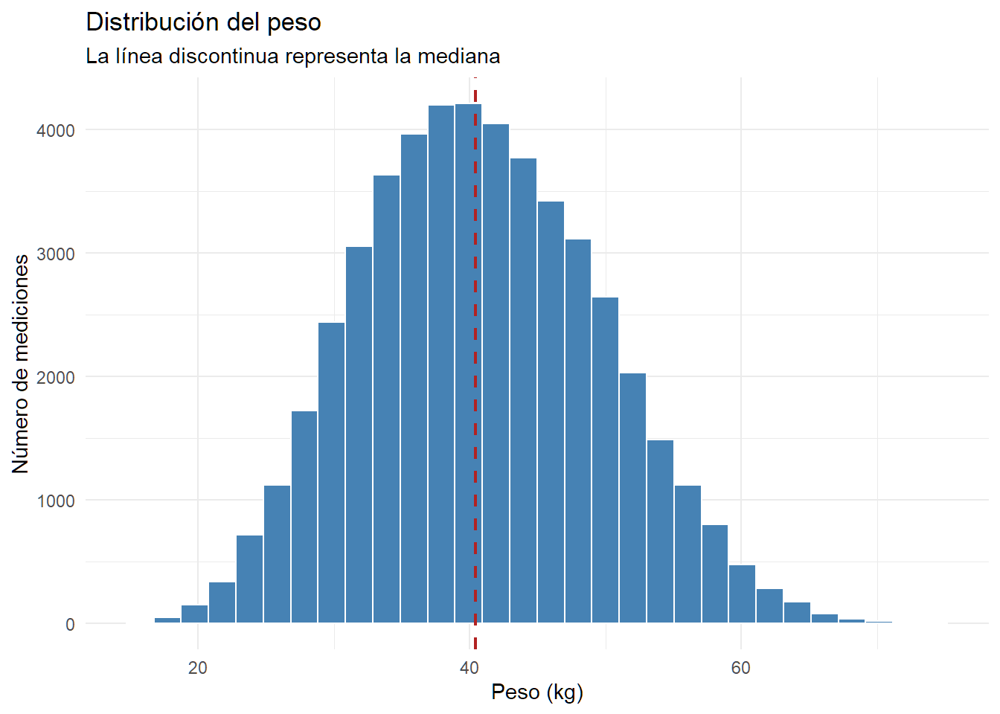
Código
ggplot(datos_b2, aes(x = consumo_kg_dia)) +geom_histogram(bins =30,fill ="darkseagreen4",color ="white",na.rm =TRUE ) +geom_vline(aes(xintercept =median(consumo_kg_dia, na.rm =TRUE)),color ="firebrick",linewidth =0.8,linetype ="dashed" ) +labs(title ="Distribución del consumo diario de alimento",subtitle ="La línea discontinua representa la mediana",x ="Consumo de alimento (kg/día)",y ="Número de mediciones" ) +theme_minimal()
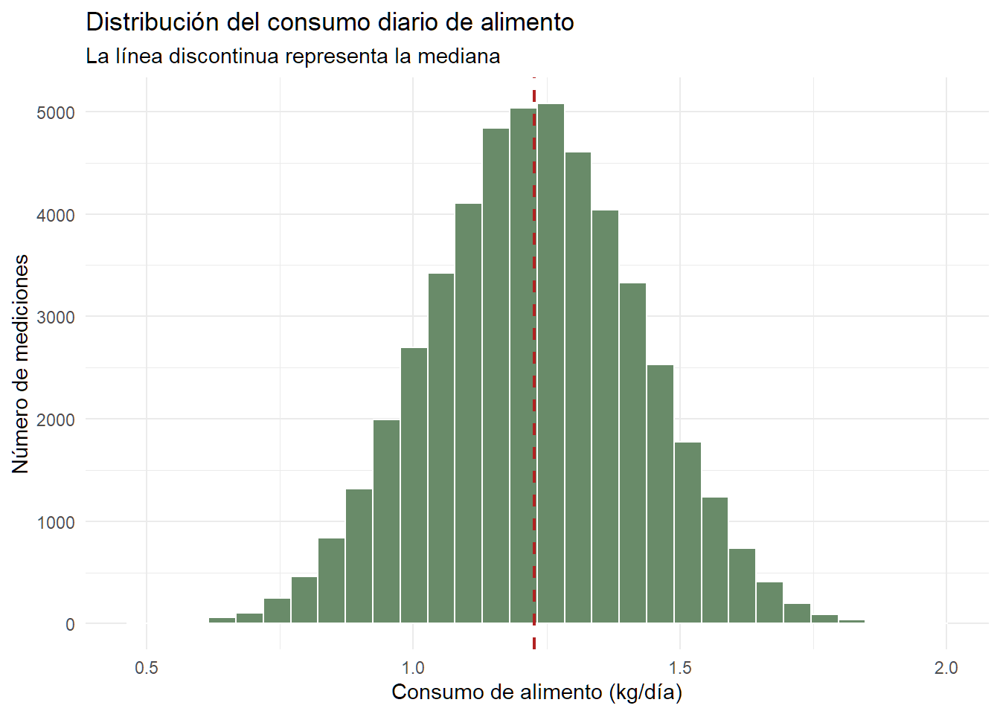
Para la variable ordinal de salud, calcularemos el número de observaciones y el porcentaje correspondiente a cada puntuación.
Código
tabla_salud <- datos_b2 |>count(salud_score_0_4, name ="n") |>mutate(porcentaje =100* n /sum(n) )tabla_salud
ggplot( tabla_salud,aes(x = salud_score_0_4, y = porcentaje)) +geom_col(fill ="darkorange3", width =0.75) +geom_text(aes(label =paste0(round(porcentaje, 1), "%")),vjust =-0.3,size =3.5 ) +labs(title ="Distribución de la puntuación de salud",x ="Puntuación de salud",y ="Porcentaje de mediciones" ) +expand_limits(y =max(tabla_salud$porcentaje) *1.12) +theme_minimal()
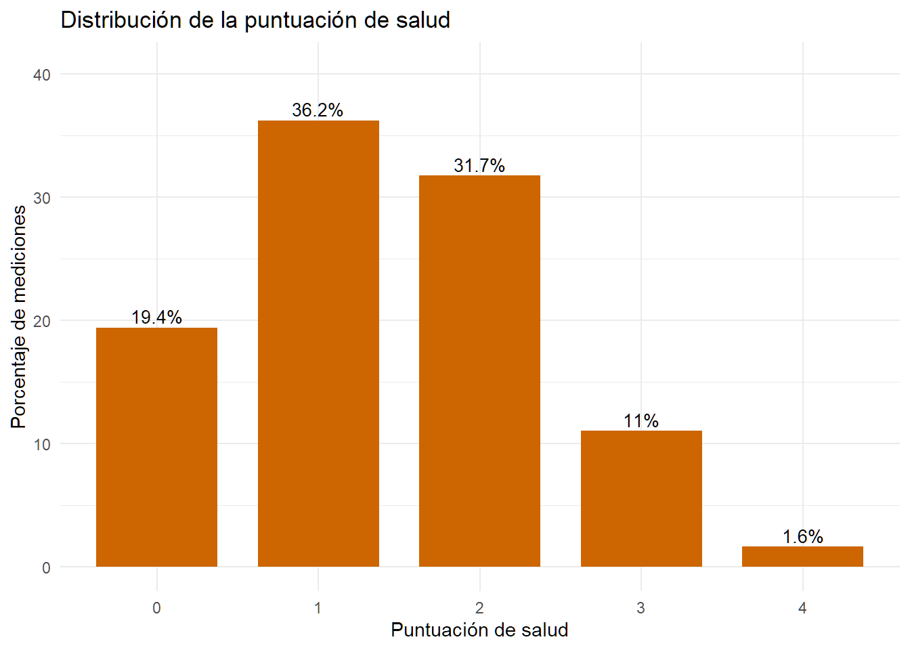
La puntuación de salud debe interpretarse respetando el significado asignado durante la simulación. Una barra más alta indica una categoría más frecuente, pero no implica necesariamente una diferencia estadísticamente significativa frente a las demás categorías.
3.3 Comparación por sexo y raza
Los diagramas de caja permiten comparar la posición y la dispersión de una variable cuantitativa entre grupos. La línea central representa la mediana, la caja contiene el 50 % central de las observaciones y los puntos alejados pueden indicar valores atípicos respecto al resto de la distribución.
ggplot(datos_b2, aes(x = raza, y = peso_kg, fill = raza)) +geom_boxplot(alpha =0.75,outlier.alpha =0.20,na.rm =TRUE ) +labs(title ="Distribución del peso según la raza",x ="Raza",y ="Peso (kg)" ) +guides(fill ="none") +theme_minimal() +theme(axis.text.x =element_text(angle =35, hjust =1) )
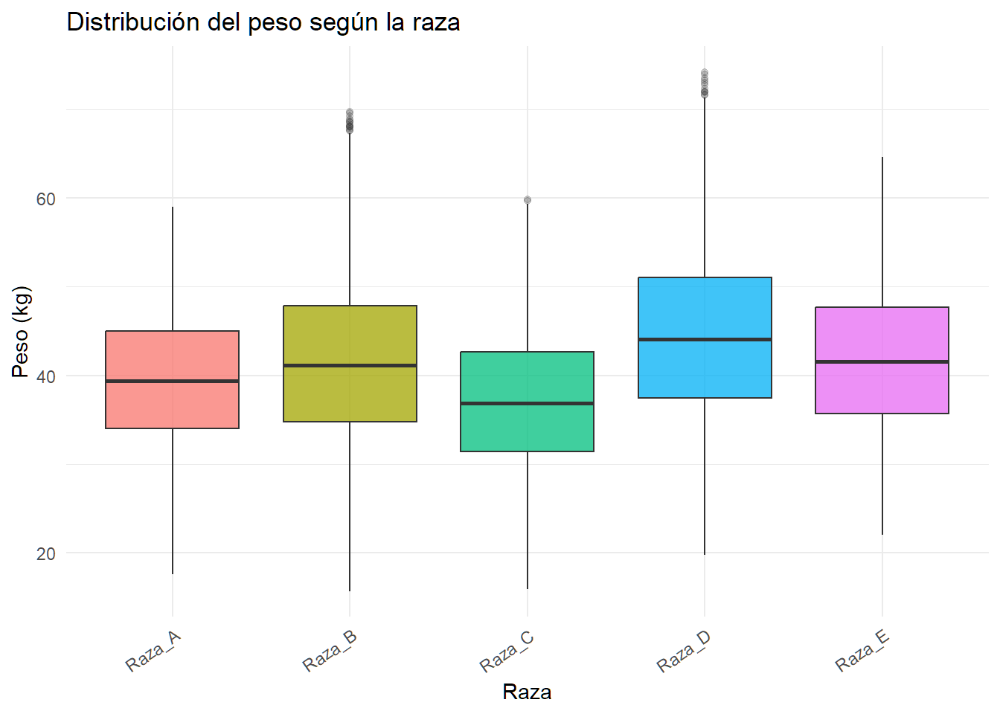
Las diferencias observadas son descriptivas. Como cada animal contribuye con varias mediciones, no debemos aplicar directamente una prueba diseñada para observaciones independientes sobre todas las filas. Además, el peso puede cambiar simultáneamente con la edad y la semana de seguimiento.
3.4 Comparación por semana
Para describir la evolución semanal calcularemos la media, la mediana, la desviación estándar y el número de mediciones disponibles en cada semana. También construiremos un intervalo descriptivo alrededor de la media utilizando el error estándar.
ggplot( resumen_semana,aes(x = tiempo, y = peso_medio)) +geom_ribbon(aes(ymin = limite_inferior,ymax = limite_superior ),fill ="steelblue",alpha =0.20 ) +geom_line(color ="steelblue4", linewidth =0.9) +geom_point(color ="steelblue4", size =1.2) +labs(title ="Evolución semanal del peso medio",subtitle ="La banda representa media ± 1,96 errores estándar",x ="Semana de seguimiento",y ="Peso medio (kg)" ) +theme_minimal()
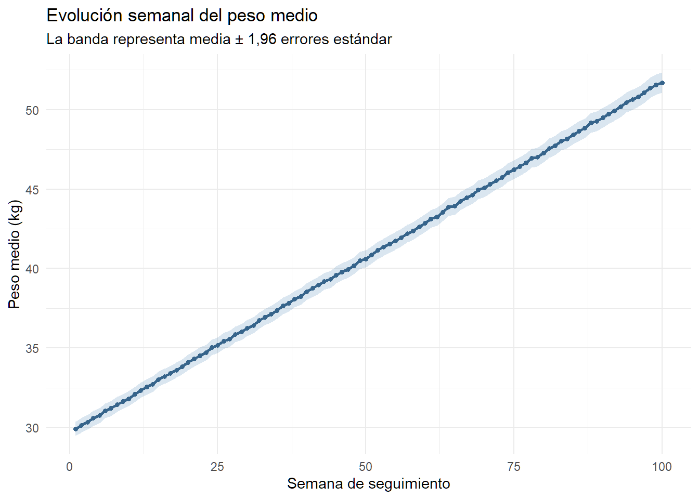
La banda representa la precisión descriptiva de la media de cada semana, pero no corrige la dependencia entre mediciones del mismo animal. Por tanto, no debe interpretarse como el intervalo de confianza de un modelo longitudinal.
También podemos representar el consumo medio mediante barras para comparar periodos sucesivos del seguimiento.
ggplot( consumo_periodo,aes(x = periodo, y = consumo_medio)) +geom_col(fill ="darkseagreen4", width =0.75) +geom_text(aes(label =round(consumo_medio, 2)),vjust =-0.3,size =3.3 ) +labs(title ="Consumo medio de alimento por periodo",x ="Periodo de seguimiento",y ="Consumo medio (kg/día)" ) +expand_limits(y =max(consumo_periodo$consumo_medio) *1.10) +theme_minimal() +theme(axis.text.x =element_text(angle =25, hjust =1) )
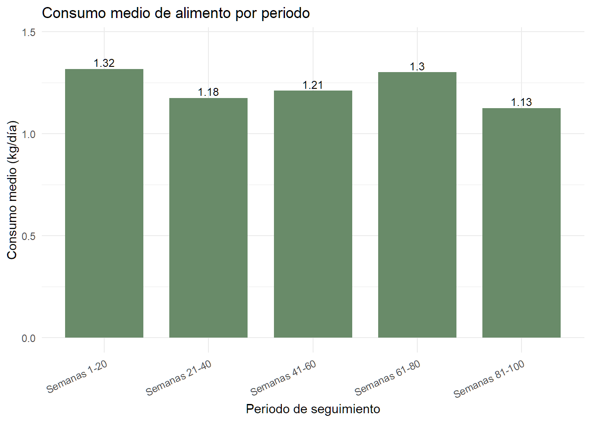
3.5 Comparación entre granjas
Cuando existen muchas granjas, un diagrama de caja para todas ellas puede resultar difícil de leer. Para una primera comparación, seleccionaremos las diez granjas con mayor número de mediciones. Esta selección se utiliza exclusivamente para mejorar la visualización y no para realizar inferencia.
datos_b2 |>filter(granja_id %in% granjas_mas_observadas) |>ggplot(aes(x =reorder(granja_id, peso_kg, FUN = median, na.rm =TRUE),y = peso_kg,fill = granja_id ) ) +geom_boxplot(outlier.alpha =0.15,na.rm =TRUE ) +coord_flip() +labs(title ="Distribución del peso en diez granjas",subtitle ="Granjas con mayor número de mediciones",x ="Granja",y ="Peso (kg)" ) +guides(fill ="none") +theme_minimal()
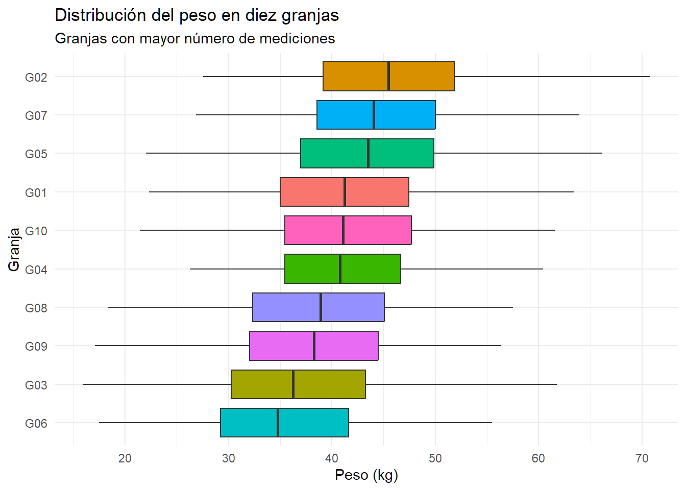
El orden de las cajas facilita reconocer granjas con pesos medianos diferentes. Sin embargo, una comparación directa puede estar influida por la raza, el sexo, la edad inicial, el sistema productivo y las semanas observadas en cada explotación.
3.6 Tablas de contingencia
Una tabla de contingencia resume conjuntamente dos variables categóricas. Cada celda contiene el número de observaciones correspondiente a una combinación de categorías. Además de las frecuencias absolutas, podemos calcular porcentajes por fila para comparar la composición de cada grupo.
Primero estudiaremos la relación descriptiva entre sexo y salud alta.
ggplot( tabla_sexo_salud_larga,aes(x = sexo, y = porcentaje, fill = salud_alta)) +geom_col(position ="dodge") +labs(title ="Salud alta según el sexo",x ="Sexo",y ="Porcentaje dentro de cada sexo",fill ="Salud alta" ) +theme_minimal()
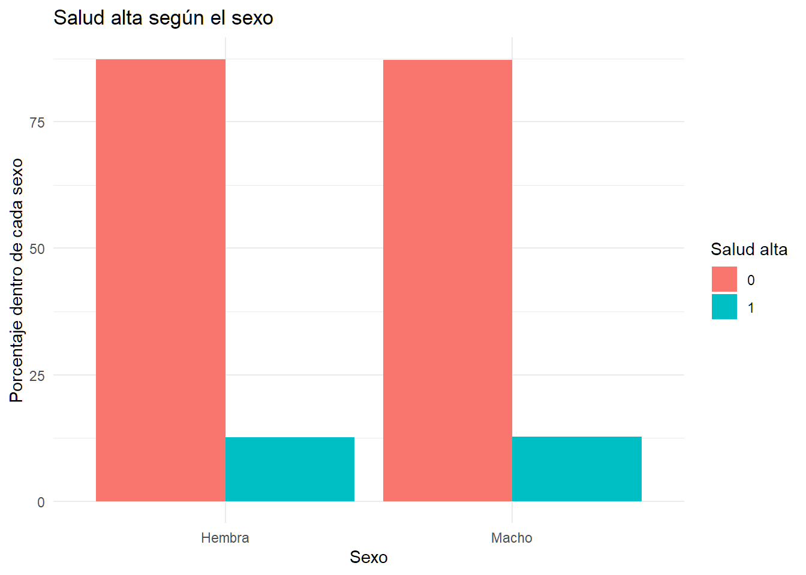
También podemos construir una tabla de contingencia entre la raza y la puntuación ordinal de salud.
tabla_raza_salud_larga <- datos_b2 |>filter(!is.na(raza),!is.na(salud_score_0_4) ) |>count(raza, salud_score_0_4, name ="n") |>group_by(raza) |>mutate(porcentaje =100* n /sum(n) ) |>ungroup()# Barras apiladas al 100 %.ggplot( tabla_raza_salud_larga,aes(x = raza, y = porcentaje, fill = salud_score_0_4)) +geom_col() +labs(title ="Composición de la puntuación de salud por raza",x ="Raza",y ="Porcentaje dentro de cada raza",fill ="Puntuación de salud" ) +theme_minimal() +theme(axis.text.x =element_text(angle =35, hjust =1) )
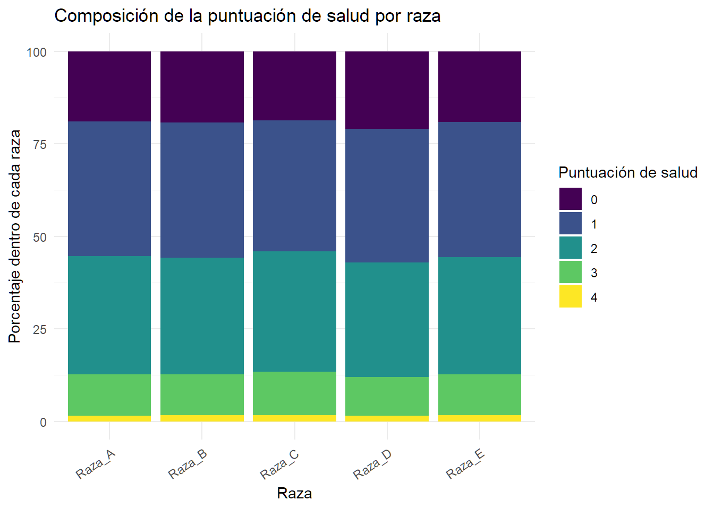
Las tablas anteriores contienen mediciones repetidas. Por ello, una misma oveja puede contribuir a diferentes celdas a lo largo del tiempo, especialmente si su estado de salud cambia. Las frecuencias describen la base longitudinal, no una muestra de animales observados una sola vez.
3.7 Gráficos de barras por tiempo
Los gráficos de barras temporales permiten estudiar cómo cambia la composición de una variable categórica durante el seguimiento. Utilizaremos los periodos definidos previamente para evitar un gráfico con cien barras semanales difíciles de interpretar.
Primero representaremos la distribución de la puntuación de salud dentro de cada periodo.
Código
salud_periodo <- datos_b2 |>filter(!is.na(periodo),!is.na(salud_score_0_4) ) |>count(periodo, salud_score_0_4, name ="n") |>group_by(periodo) |>mutate(porcentaje =100* n /sum(n) ) |>ungroup()salud_periodo
ggplot( salud_periodo,aes(x = periodo,y = porcentaje,fill = salud_score_0_4 )) +geom_col() +labs(title ="Distribución de la salud a lo largo del seguimiento",x ="Periodo",y ="Porcentaje de mediciones",fill ="Puntuación de salud" ) +theme_minimal() +theme(axis.text.x =element_text(angle =25, hjust =1) )
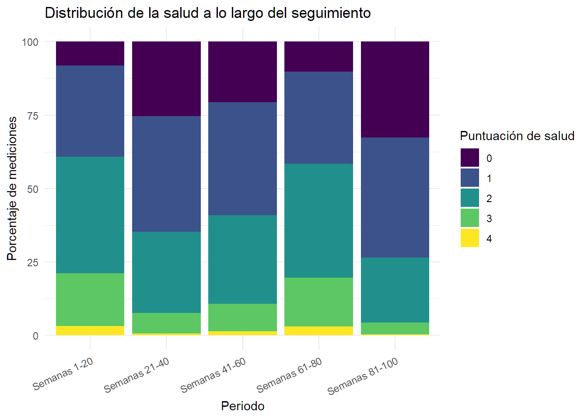
En este gráfico, cada barra representa el 100 % de las mediciones disponibles en un periodo. Los segmentos muestran la proporción correspondiente a cada puntuación de salud. Esto permite comparar la composición sanitaria entre periodos aunque el número total de observaciones no sea idéntico.
También podemos representar la proporción de mediciones clasificadas como salud alta en cada semana.
Código
salud_alta_semana <- datos_b2 |>filter(!is.na(salud_alta)) |>count(tiempo, salud_alta, name ="n") |>group_by(tiempo) |>mutate(porcentaje =100* n /sum(n) ) |>ungroup()salud_alta_semana
ggplot( salud_alta_semana,aes(x =factor(tiempo), y = porcentaje, fill = salud_alta)) +geom_col(width =0.85) +labs(title ="Salud alta por semana de seguimiento",x ="Semana",y ="Porcentaje de mediciones",fill ="Salud alta" ) +scale_x_discrete(breaks =as.character(seq(min(datos_b2$tiempo, na.rm =TRUE),max(datos_b2$tiempo, na.rm =TRUE),by =10 )) ) +theme_minimal() +theme(axis.text.x =element_text(angle =45, hjust =1) )
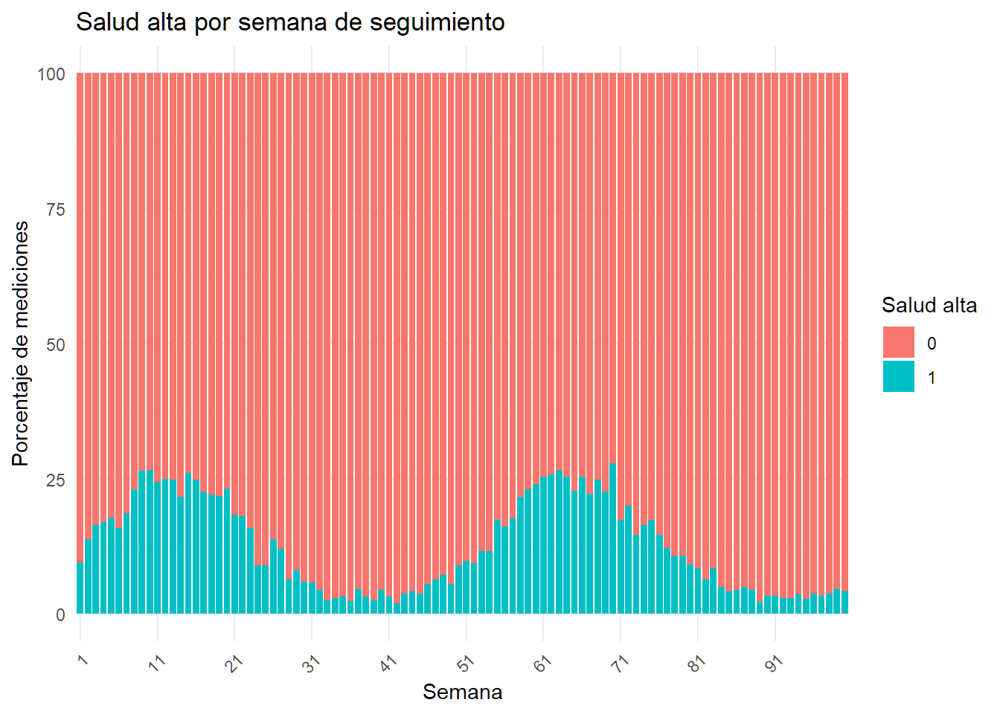
El gráfico semanal conserva mayor detalle temporal, pero puede presentar fluctuaciones difíciles de interpretar. La agrupación por periodos ofrece una visión más estable, aunque oculta variaciones específicas entre semanas consecutivas.
3.8 Diagramas de dispersión y correlaciones
Un diagrama de dispersión representa dos variables cuantitativas. Cada punto corresponde a una medición y permite observar la dirección, la forma y la intensidad aparente de su relación. También ayuda a detectar valores extremos y cambios en la variabilidad.
Estudiaremos primero la relación entre consumo de alimento y peso. Como la base puede contener muchas observaciones, utilizaremos transparencia para reducir la superposición de puntos.
Código
ggplot( datos_b2,aes(x = consumo_kg_dia, y = peso_kg)) +geom_point(alpha =0.15,size =1,na.rm =TRUE ) +geom_smooth(method ="lm",se =FALSE,color ="firebrick",linewidth =0.9,na.rm =TRUE ) +labs(title ="Relación entre consumo de alimento y peso",subtitle ="La línea representa una tendencia lineal descriptiva",x ="Consumo de alimento (kg/día)",y ="Peso (kg)" ) +theme_minimal()
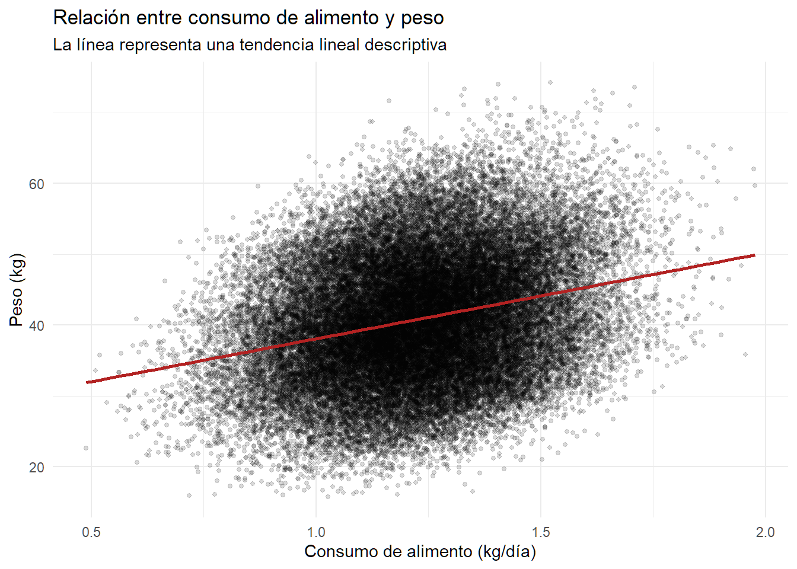
La pendiente visual resume una tendencia general entre las mediciones, pero mezcla diferencias entre animales y cambios ocurridos dentro de cada animal. Una asociación positiva podría aparecer porque los animales más grandes consumen más, porque el consumo y el peso aumentan con el tiempo o por ambos procesos simultáneamente.
Podemos comparar la relación entre consumo y peso según el sexo.
Código
ggplot( datos_b2,aes(x = consumo_kg_dia,y = peso_kg,color = sexo )) +geom_point(alpha =0.18,size =1,na.rm =TRUE ) +geom_smooth(method ="lm",se =FALSE,linewidth =0.8,na.rm =TRUE ) +labs(title ="Consumo y peso según el sexo",x ="Consumo de alimento (kg/día)",y ="Peso (kg)",color ="Sexo" ) +theme_minimal()
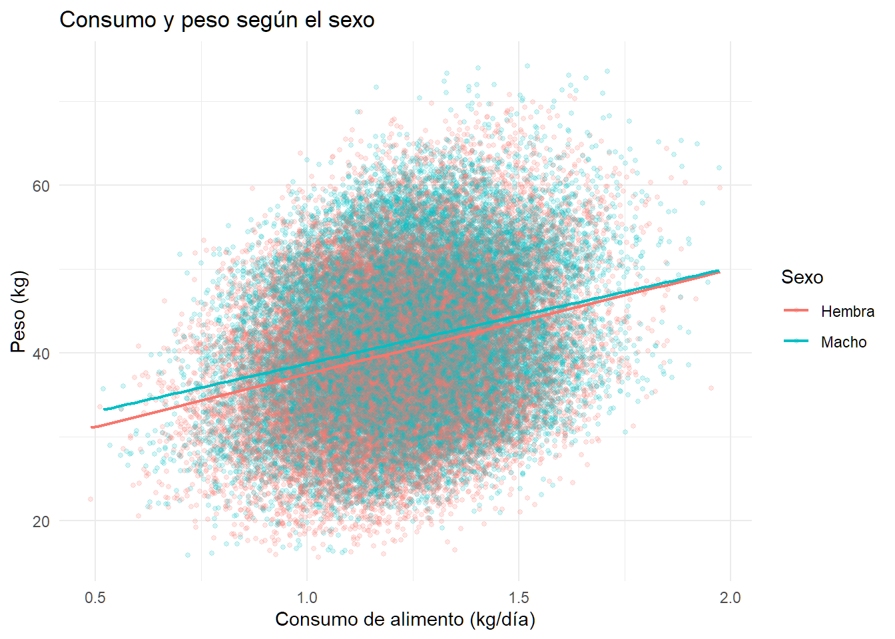
La correlación de Pearson resume la relación lineal entre dos variables. Calcularemos una matriz con un conjunto reducido de variables productivas y ambientales para mantener una visualización legible.
Una correlación próxima a 1 indica una asociación lineal positiva; una correlación próxima a -1 indica una asociación lineal negativa; y una correlación próxima a 0 indica ausencia de una relación lineal fuerte. Un valor próximo a 0 no descarta una relación no lineal.
En datos longitudinales, la matriz debe considerarse exploratoria. Las correlaciones pueden estar influidas por el tiempo, la granja y la repetición de observaciones dentro de cada animal.
3.9 Evolución del peso de un animal
Para comprender la estructura longitudinal observaremos la trayectoria completa de un animal. Seleccionaremos automáticamente el animal con mayor número de mediciones de peso disponibles. En caso de empate, se utilizará el primero en el orden de la tabla.
ggplot( datos_animal,aes(x = tiempo, y = peso_kg)) +geom_line(color ="steelblue4", linewidth =0.9, na.rm =TRUE) +geom_point(color ="steelblue4", size =2, na.rm =TRUE) +labs(title =paste("Evolución del peso del animal", animal_seleccionado ),x ="Semana de seguimiento",y ="Peso (kg)" ) +theme_minimal()
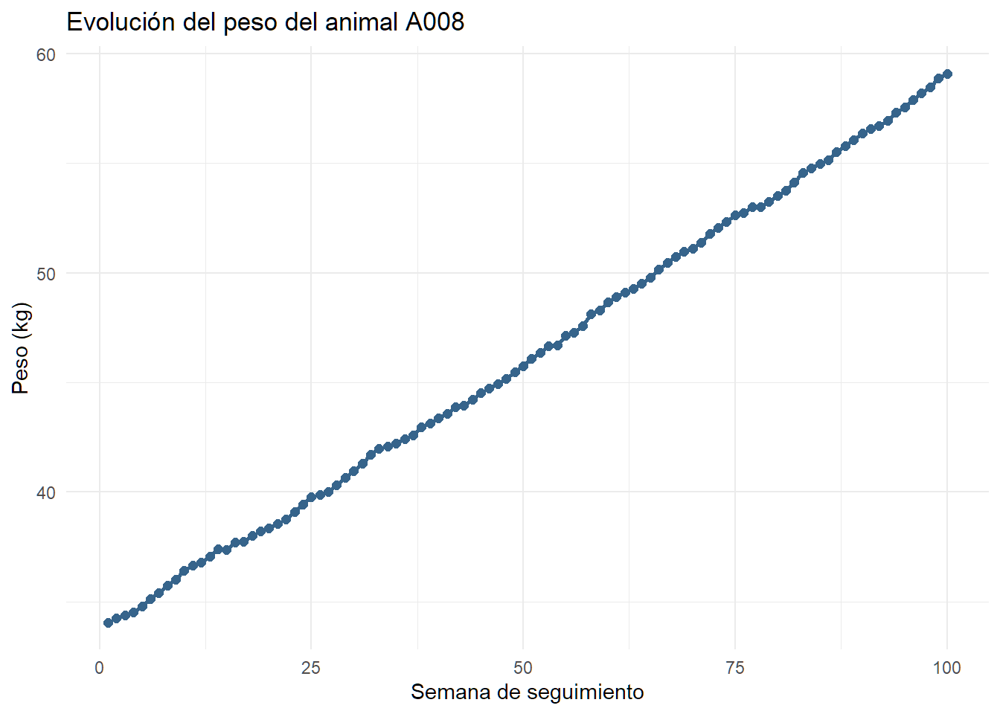
La trayectoria individual permite reconocer cambios graduales, semanas sin medición y fluctuaciones inesperadas. Un descenso o incremento brusco puede tener una explicación biológica, pero también puede indicar un problema de registro. Por ello, los valores llamativos deben revisarse antes de eliminarlos o corregirlos.
3.10 Evolución individual y promedio semanal
Para comparar una trayectoria individual con el comportamiento general, uniremos el peso del animal seleccionado y el promedio de todos los animales en cada semana.
Esta comparación muestra si el animal seleccionado se mantiene por encima o por debajo del promedio y si su trayectoria sigue una forma similar a la tendencia general. No obstante, el promedio semanal combina animales de diferentes razas, edades, sexos y granjas.
3.11 Promedio semanal por sexo y raza
Para observar si la evolución temporal cambia entre grupos, calcularemos el peso medio semanal por sexo y por raza. Estos gráficos permiten comparar tendencias generales sin mostrar todas las trayectorias individuales.
Código
peso_semana_sexo <- datos_b2 |>group_by(tiempo, sexo) |>summarise(peso_medio =mean(peso_kg, na.rm =TRUE),n =sum(!is.na(peso_kg)),.groups ="drop" )ggplot( peso_semana_sexo,aes(x = tiempo, y = peso_medio, color = sexo)) +geom_line(linewidth =0.9) +labs(title ="Peso medio semanal según el sexo",x ="Semana de seguimiento",y ="Peso medio (kg)",color ="Sexo" ) +theme_minimal()
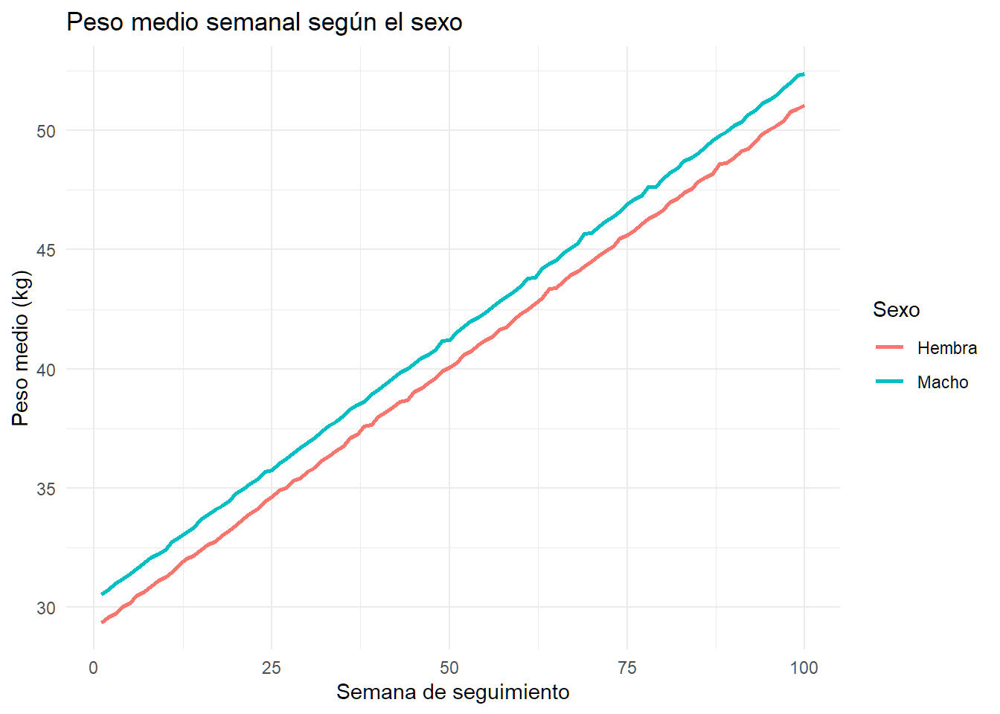
Código
peso_semana_raza <- datos_b2 |>group_by(tiempo, raza) |>summarise(peso_medio =mean(peso_kg, na.rm =TRUE),n =sum(!is.na(peso_kg)),.groups ="drop" )ggplot( peso_semana_raza,aes(x = tiempo, y = peso_medio, color = raza)) +geom_line(linewidth =0.8) +labs(title ="Peso medio semanal según la raza",x ="Semana de seguimiento",y ="Peso medio (kg)",color ="Raza" ) +theme_minimal() +theme(legend.position ="bottom" )
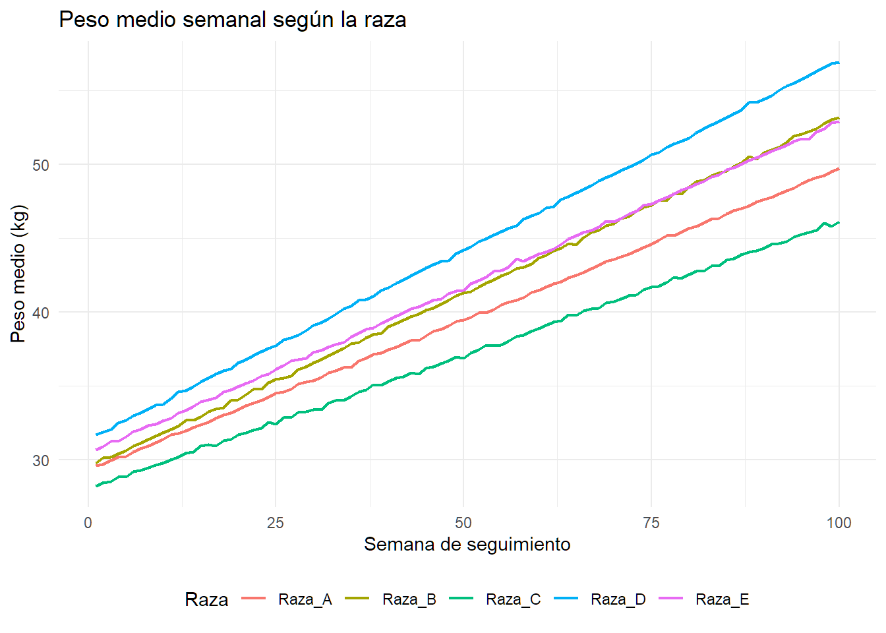
Las separaciones entre líneas pueden sugerir diferencias entre grupos, pero también pueden deberse a una composición distinta de animales o granjas. Los modelos mixtos permitirán estudiar posteriormente estas diferencias considerando la repetición de mediciones y la agrupación dentro de las explotaciones.
3.12 Actividad de interpretación
A partir de las tablas y los gráficos anteriores, responda las siguientes preguntas:
¿La distribución del peso es aproximadamente simétrica o presenta asimetría?
¿La media y la mediana del peso son similares?
¿Qué sexo y qué raza presentan el mayor peso medio descriptivo?
¿El consumo medio aumenta, disminuye o permanece estable durante el seguimiento?
¿La composición de las categorías de salud cambia entre periodos?
¿Qué variables presentan las correlaciones positivas y negativas más intensas?
¿La trayectoria del animal seleccionado sigue el mismo patrón que el promedio semanal?
¿Existen granjas con distribuciones de peso claramente diferentes?
¿Qué patrones podrían explicarse por el tiempo y cuáles podrían relacionarse con características individuales o de manejo?
¿Qué resultados deberían comprobarse posteriormente mediante un modelo longitudinal?
Al finalizar este bloque debemos ser capaces de resumir variables cuantitativas y categóricas, interpretar histogramas, diagramas de caja, barras y diagramas de dispersión, construir tablas de contingencia y describir cambios temporales. También debemos reconocer que las comparaciones exploratorias no sustituyen a los modelos que consideran la dependencia entre mediciones del mismo animal y la agrupación de animales dentro de las granjas.